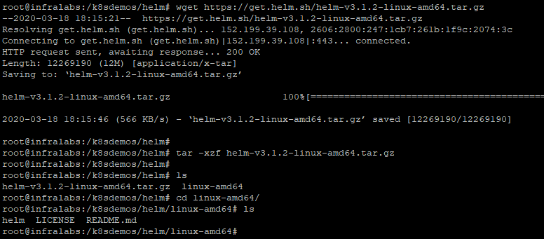
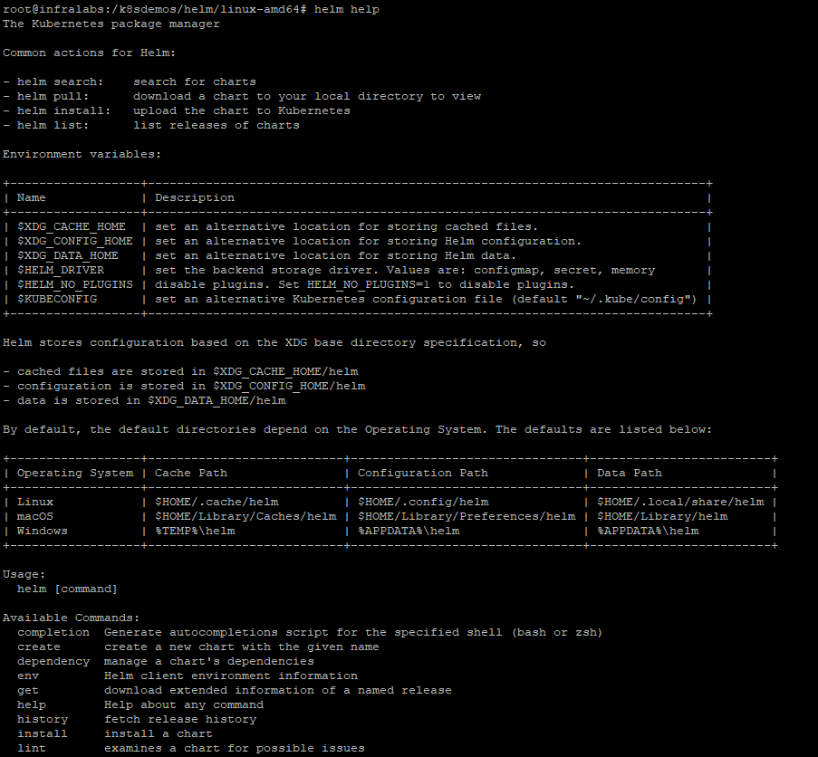
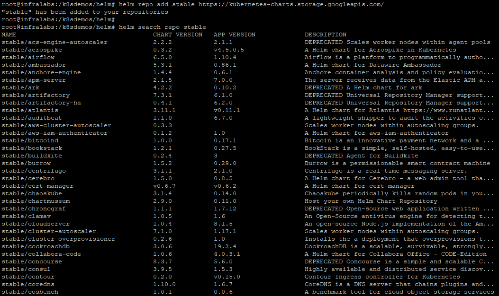
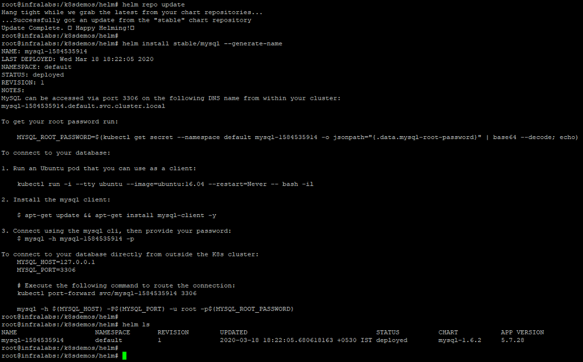
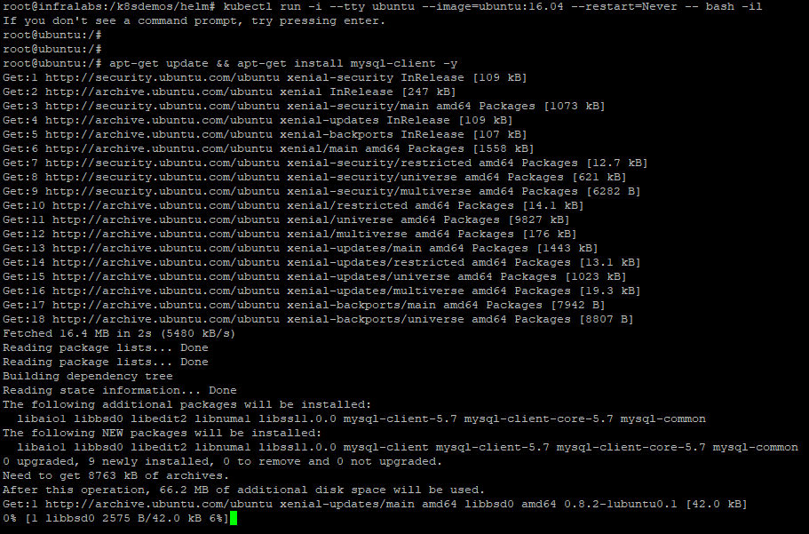

Helm Installation
Helm helps you manage Kubernetes applications — Helm Charts help you define, install, and upgrade even the most complex Kubernetes application.
We will be installing Helm based on the reference steps from this link "Installing Helm".
- Download latest version or previous versions here, https://github.com/helm/helm/releases
- Unpack the tar file
tar -zxvf helm-v3.0.0-linux-amd64.tar.gz - Find the helm binary in the unpacked directory, and move it to its desired destination using below command,
mv linux-amd64/helm /usr/local/bin/helm - Once the Helm is ready, we can add a chart repository using below commands. Refer to Helm Quickstart Guide reference link below.
helm repo add stable https://kubernetes-charts.storage.googleapis.com/ helm search repo stable helm repo update helm install stable/mysql #--Follow the description of above command to verify about MySQL Database connection and the container.
Installation through script
We can also install using script as given below,
$ curl -fsSL -o get_helm.sh https://raw.githubusercontent.com/helm/helm/master/scripts/get-helm-3
$ chmod 700 get_helm.sh
$ ./get_helm.sh
Reference Links for Helm
About Helm: https://helm.sh
Helm Installation Guide: https://helm.sh/docs/intro/install
Helm Quickstart Guide: https://helm.sh/docs/intro/quickstart
Helm Hub https://hub.helm.sh
Below screenshots for reference,




Back to Home